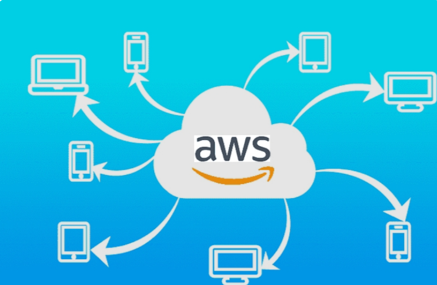

Overview
AWS
AWS를 사용하면서 서버를 직접 구축하고 관리하는 경험을 할 수 있었습니다. 처음에는 어렵게 느껴졌지만 리눅스 환경을 하나씩 이해하고 설정해 나가는 과정이 흥미로웠습니다. AWS는 강력하고 편리한 서비스이지만, 제대로 활용하기 위해서는 많은 공부와 경험이 필요하다는 것을 느꼈고, 그만큼 더 배우고 싶다는 동기부여가 되었습니다.
HTML
CSS
GitHub Pages
Reflection
배운 점과 느낀 점
AWS를 활용하며 서버 구축과 리눅스 환경 설정을 경험할 수 있었습니다. 직접 문제를 해결해 나가며 시스템에 대한 이해를 높일 수 있었고, AWS를 효과적으로 활용하기 위해서는 꾸준한 학습과 경험이 중요하다는 것을 깨달았습니다.